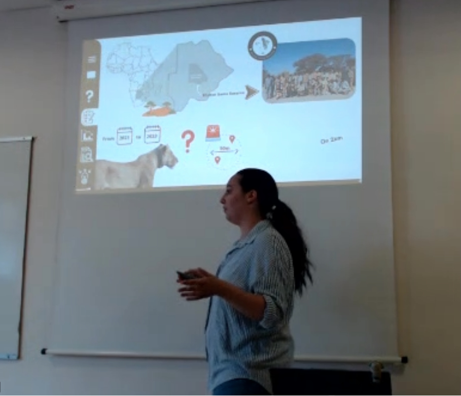

How do animals solve new problems?
My experimental work examines innovation, learning, memory, and behavioral flexibility, asking how ecological and social conditions shape the cognitive challenges animals face.

Behavioral Ecologist · Wildlife Ecologist
How do ecological conditions shape social behavior?
I study how animals respond to social and ecological challenges, with African lions as my primary study system. My research spans cognition, learning, and cooperative problem solving to collective behavior, communication, and sensory ecology, combining experiments with field observation, tracking, acoustics, and biologging.
Max Planck Institute of Animal Behavior · University of Konstanz · University of Minnesota Lion Center
Research trajectory
My research began with a question about cognition: how do the social and ecological challenges animals face shape the way they solve problems? Experimental studies of carnivores led me from innovation, learning, and memory to cooperative problem solving and behavioral flexibility. Those questions now extend into the wild, where I ask how individual decisions scale into social organization and collective behavior under different ecological conditions.
My experimental work examines innovation, learning, memory, and behavioral flexibility, asking how ecological and social conditions shape the cognitive challenges animals face.
Studies of cooperative problem solving led me to ask how social tolerance, partner availability, and the costs and benefits of acting together shape collective outcomes.
I now extend these questions across wild populations, testing how ecological conditions alter association, communication, cooperation, information use, and other social strategies.
Teaching trajectory
I teach science as a way of thinking. Across courses and mentorship, I structure learning so students move from understanding concepts to making predictions, evaluating evidence, comparing explanations, and eventually developing questions they can investigate independently.
I use Bloom's taxonomy as a practical progression: students first establish conceptual foundations, then apply, analyze, evaluate, and create with increasing independence.
My mentorship is designed to move students from structured entry points into thesis work, conference presentations, publications, and independent scholarship.
Inclusive teaching, flexible participation, cross-cultural mentorship, and capacity building are part of how I widen access to scientific participation and ownership.
Research in motion
Short updates from the field, new papers, student research, talks, public scholarship, and ongoing projects.

A comparative perspective on what lion behavioral ecology looks like when research expands beyond a small number of intensively studied populations.
Read Field Note →
MSc intern Candice Bazin successfully defended her thesis and earned the highest thesis grade in her cohort. Her research combined tracker reconstructions and biologging to investigate fine-scale lion hunting behavior.
Read Field Note →
Student research uses tracker reconstructions and biologging to investigate fine-scale lion hunting behavior.
Read Field Note →